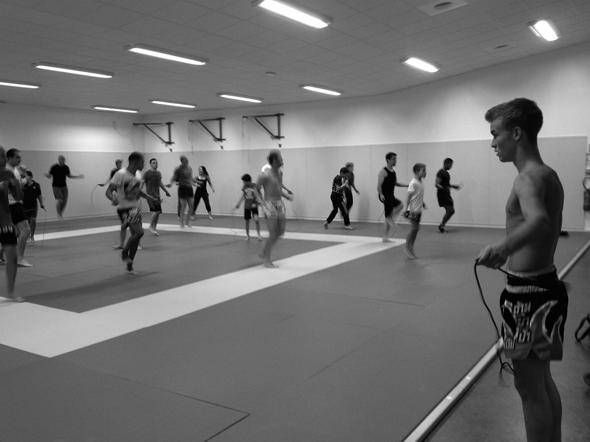

Informations championnat national de BOJI 2014
Céline et Pix vont participer au championnat de France de BOJI.
Ça se passera le Dimanche 1 Juin, au Gymnase Anne Franck, 7 rue Jean Poulmarch, 94290 VILLEUNEUVE LE ROI
Si vous voulez partager ce moment avec nous, venez à partir de 10h-10h30.
À Dimanche !
Résultats Compétition de SANDA 2014
Au terme d'une journée épique, nos deux champions ont conservé leur titre.
Le premier combat de Julien a été remporté par décision au deuxième round.
Sa finale a été gagnée par KO technique après abandon.
Le premier combat de pix a été gagné au deuxième round par KO technique, après que l'entraîneur ait jetté l'éponge.
Sa finale a été remportée aux points au deuxième round.
Merci aux courageux qui ont fait le déplacement, et évidemment au coach pour sa préparation.
N'hésitez pas à aller voir les photos et vidéos dans la rubrique médias.
Informations Compétition de SANDA 2014
Julien et Pix remettent leur titre en jeu au championnat d'Île-de-france de SANDA.
Ça se passera le Dimanche 2 Mars, au Complexe Sportif Léo Lagrange, 68 Boulevard Poniatowski, 75012 Paris.
Venez à partir de 10h pour découvrir la compétition si ce n'est pas déjà fait, et supporter vos sparring partners !
À Dimanche pour les courageux !
Bonjour à tous
Ca y est, l'association MANTIS BOXING vient d'ouvrir ses portes.
Les cours ont commencé le 17 septembre 2013 au nouveau complexe sportif de Port-Marly, dans la salle du dojo.
Bienvenue sur notre site où vous trouverez des infos sur nos cours, les actus, l'équipe enseignante, les photos et vidéos !
